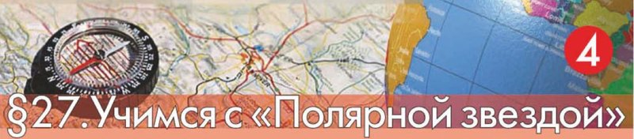

Учимся с «Полярной звездой»
Амина, этот параграф — не рассказ, а работа: надо разработать туристический маршрут и представить его на конкурс «Скульптурный портрет планеты». Готовое задание — это карта с горами, равнинами и вулканами, проложенный по ней маршрут и объяснение словами, почему маршрут именно такой.

Учебник начинает издалека. Латинское слово relevo значит «поднимаю», от него пошло французское relief — выпуклое изображение на плоскости. И дальше красивая мысль: рельеф Земли — это её скульптурный портрет.
Представь скульптора, который лепит планету: где-то поднял горы, где-то разгладил равнину, где-то оставил вулкан. Твоя задача — провести туриста по самым интересным местам этого портрета.
Работа идёт на контурной карте — карте без названий и без красок, только очертания материков. Всё, что на ней появится, нанесёшь ты сама: сначала общее (горы, равнины, океаны), потом маршрут.
Готовых ответов в этом параграфе нет — и у нас их тоже не будет. Будет план работы, все правила из книги, подсказки, с чего начать, словарик нужных слов и игра на внимание к карте.
У каждого шага вверху написано, на какой странице учебника искать. Внизу шага есть «Подробнее, как в учебнике»: там всё, что есть на этой странице, ничего не пропущено.
Надпись вверху шага подсказывает, откуда он: золотая — задание учебника, оранжевая — сверх учебника (пересказ, словарик, игра). Синих шагов «из учебника» здесь нет: весь параграф — одно большое задание.
Подробнее, как в учебнике · с. 92
- § 27 называется «Учимся с „Полярной звездой“». Цифра 4 в кружке на шапке параграфа значит, что это четвёртый такой практикум в учебнике.
- Заголовок раздела на странице: «Выполняем проектное задание».
- Первый абзац: «Латинское слово relevo означает „поднимаю“. Произошедшее от него одно из значений французского слова relief — выпуклое изображение на плоскости. Образно говоря, рельеф Земли — это её скульптурный портрет».
- Дальше: «Перед вами стоит задача представить разработку туристического маршрута на конкурс „Скульптурный портрет планеты“».
- Условия конкурса и все шаги работы — на следующих шагах этой страницы, слово в слово по смыслу.
- На полях страницы примечание: «по указанию учителя задание может выполняться в паре или в группе».
- Зелёная врезка на полях: «Вспомните полезные советы на с. 8 вашего учебника».
- Перед первым шагом сказано: «Приступая к работе, нужно хорошо понимать её цель. Это поможет правильно спланировать дальнейшие действия».
- Других иллюстраций, кроме шапки параграфа (компас на карте и глобус), на с. 92—93 нет.
Что задаёт учебник
Условия конкурса
- Готовый продукт должен представлять собой географическую карту, на которую нанесены крупнейшие формы рельефа Земли, основные формы рельефа суши, а также крупные географические объекты, связанные с вулканической деятельностью.
- На карте должен быть проложен туристический маршрут с указанием начального, конечного и промежуточных пунктов следования и отмечены природные достопримечательности по теме путешествия (от трёх до шести достопримечательностей).
- Выполненное проектное задание должно содержать обоснование выбранного маршрута.
- По указанию учителя выполненное проектное задание может иметь форму: а) устного сообщения (презентации); б) пакета документов, включающего заполненную контурную карту и письменное обоснование.
Перед планом в книге сказано: «Приступая к работе, нужно хорошо понимать её цель. Это поможет правильно спланировать дальнейшие действия».
Шесть шагов работы
1-й шаг. Повторите для себя формулировку задачи и внимательно ознакомьтесь с условиями конкурса по пунктам. Подумайте, что понадобится для работы.
Подсказка учебника: понадобится контурная карта полушарий или России. Почему нельзя взять готовую карту?
2-й шаг. Разбейте на этапы свою будущую работу. У вас должны получиться такие большие блоки:
а) нанесение на контурную карту общей информации на основе полученных знаний; б) отбор географических объектов для вашего маршрута; в) нанесение выбранных объектов на контурную карту; г) обобщение необходимой информации по выбранным объектам; д) представление результатов.
Рядом в книге врезка: «Вспомните полезные советы на с. 8 вашего учебника».
3-й шаг. Нанесите на контурную карту равнины и горы, перечисленные в заданиях 1 на с. 87 и на с. 91. Подпишите океаны, чтобы легче ориентироваться на будущем маршруте.
«Прежде чем начать работу, познакомьтесь со следующими правилами» — дальше в учебнике идут правила работы с контурной картой.
Правила — на следующем шаге4-й шаг. Выбор географических объектов для маршрута — очень важная часть работы. Чем больше разнообразия встретит будущий путешественник, тем больше людей выберут ваш маршрут. Пусть в вашем маршруте будут и горы, и равнины, и вулканы (или горячие источники). Отметьте их на карте цветным флажком или другим подходящим знаком.
Подсказка учебника: выбирайте такие объекты, о которых вы сможете рассказать лучше и интереснее.
5-й шаг. По политической карте определите, на территории каких стран расположены выбранные объекты. Если все они в России, то на карте отметьте наиболее близкие крупные города. В других странах отметьте столицы. Соедините линией отмеченные пункты.
6-й шаг. Подготовьте обобщающую информацию по отмеченным объектам. Удобнее составить таблицу из трёх колонок: а) название; б) географическое положение; в) отличительные особенности.
Описывая маршрут, не забывайте указывать направление движения от одного пункта к другому, например: «От Екатеринбурга двигаемся на запад…»
Если вам предстоит делать устное сообщение (презентацию), повторите своё выступление вслух, контролируя время.
Единственное, что учебник говорит про группы, — это примечание на полях с. 92: «по указанию учителя задание может выполняться в паре или в группе».
Больше про распределение работы в параграфе ничего нет: как разделить шаги между собой, решает учитель или вы сами. Спроси на уроке, как будет у вас.
«Оцените, насколько хорошо вы справились с заданием. Желаем успеха!»
Подробнее, как в учебнике · с. 92–93
- Все четыре условия конкурса приведены выше полностью, в том же порядке, что в книге. Первые два отмечены в книге значком-галочкой, вторые два — точкой.
- Шаги 1—6 приведены выше полностью. Каждый в книге подписан курсивом посередине строки: «1-й шаг», «2-й шаг» и так далее.
- Подсказки к 1-му и 4-му шагам в книге стоят в скобках и начинаются словом «Подсказка».
- В 1-м шаге есть вопрос без ответа: «Почему нельзя взять готовую карту?» Учебник его задаёт, но не отвечает — подумать надо самой.
- Между 3-м шагом и 4-м шагом в книге целиком помещены «Правила работы с контурной картой» — они на отдельном шаге этой страницы.
- Примечание на полях с. 92: «по указанию учителя задание может выполняться в паре или в группе».
- Врезка на полях с. 92 (зелёная): «Вспомните полезные советы на с. 8 вашего учебника».
- Заканчивается параграф двумя строками: «Оцените, насколько хорошо вы справились с заданием» и «Желаем успеха!».
- Вопросов и заданий в конце параграфа нет: весь § 27 — одно проектное задание.
Пять правил из учебника
Учебник ставит эти правила прямо посреди задания, между 3-м и 4-м шагами, со словами: «Прежде чем начать работу, познакомьтесь со следующими правилами».
Зачем вообще нужна контурная карта, книга объясняет так: «Чтобы лучше запомнить, где и как размещены географические объекты на Земле, их наносят на контурную карту».
Что приготовить
Географический атлас, простой и цветные карандаши, ластик, ручка, линейка.
Находим географические объекты на физической карте в атласе и с помощью географических координат и основных ориентиров (рек, гор и т. д.) выясняем, где они размещены.
Находим положение равнин (или гор, рек, озёр, городов) на контурной карте и по найденным ориентирам обозначаем их вначале простым карандашом.
Проверив себя, закрашиваем географические объекты цветными карандашами так, как это принято на физических картах: равнины — цветом, соответствующим их высоте, горы — коричневым, водные объекты — голубым. Города обозначаем крупными точками чёрного цвета.
Аккуратно подписываем названия.
Если на контурную карту нужно нанести страны, то используем политическую карту атласа. Страны закрашиваем в разные цвета произвольно или просто подписываем.
- Сначала найти объект в атласе — а не сразу рисовать.
- Потом простым карандашом — его можно стереть ластиком.
- Только после проверки — цвет и подписи ручкой.
Правило 5 понадобится тебе на 5-м шаге задания: там как раз нужно определить страны по политической карте.
Подробнее, как в учебнике · с. 93
- Заголовок в книге стоит курсивом посередине строки: «Правила работы с контурной картой».
- Вступление: «Чтобы лучше запомнить, где и как размещены географические объекты на Земле, их наносят на контурную карту. Для этого понадобятся географический атлас, простой и цветные карандаши, ластик, ручка, линейка».
- Пять пронумерованных правил приведены выше полностью, в том же порядке.
- В правиле 3 перечислены цвета: равнины — по высоте, горы — коричневым, водные объекты — голубым, города — крупными чёрными точками.
- Ни таблицы, ни рисунка к правилам в учебнике нет — только текст.
- В § 32 (с. 106) учебник снова отправит тебя к этим правилам: «Вспомните правила работы с контурной картой (с. 93)».
С чего начать
Самое трудное в таком задании — первый шаг. Дальше пойдёт легче: половина работы уже расписана в книге, надо только аккуратно её выполнить.
Разложи карты
- Физическая карта — по ней ты ищешь, где что находится. Она есть в атласе, а если атласа под рукой нет — в Приложении учебника: карта полушарий на с. 180—181, физическая карта мира на с. 182.
- Политическая карта — по ней определяют страны, столицы и города. Она понадобится на 5-м шаге и в правиле 5.
- Контурная карта — на ней ты рисуешь. Учебник в подсказке к 1-му шагу разрешает взять карту полушарий или России.
- Простой и цветные карандаши, ластик, ручка, линейка — как в правилах на с. 93.
Карта полушарий или карта России?
Посмотри сама, что нужно нанести. В списках с с. 87 и с. 91 есть Анды, Кордильеры, Гималаи, Аппалачи, Амазонская низменность, Бразильское плоскогорье, Декан. В России их нет.
Значит, на контурной карте России они просто не поместятся. Выбирай карту полушарий (или карту мира) — на ней помещается всё.
А почему нельзя взять готовую карту?
Этот вопрос учебник задаёт в 1-м шаге и ответа не даёт — подумать надо самой. Два направления для размышления: чем готовая физическая карта мешает (что на ней уже нарисовано такого, чего на твоей карте быть не должно) и что ты теряешь, если не наносишь объекты руками. Свой ответ запиши одним-двумя предложениями — он пригодится в обосновании.
Что именно просят нанести на 3-м шаге
3-й шаг отправляет тебя к двум заданиям в конце прошлых параграфов. Вот что там перечислено — чтобы ты знала, что искать. Находить их на карте и наносить придётся тебе.
- Равнины: Восточно-Европейская, Великая Китайская.
- Низменности: Западно-Сибирская, Амазонская, Индо-Гангская, Прикаспийская.
- Возвышенность: Среднерусская.
- Плоскогорья: Среднесибирское, Декан, Бразильское.
Низменности, возвышенности и плоскогорья — это виды равнин, поэтому 3-й шаг и называет их все «равнинами».
- Горы: Кавказ, Альпы, Анды, Кордильеры, Уральские, Скандинавские, Гималаи, Аппалачи.
- Вершины: Джомолунгма (Эверест), Эльбрус.
3-й шаг просит нанести «равнины и горы». Вершины — это точки внутри гор, а не сами горы. Спроси у учителя, наносить ли и их; поставить две точки со звёздочкой и подписать высоту нетрудно, и карта от этого только выиграет.
И подписать океаны
Их четыре: Тихий, Атлантический, Индийский, Северный Ледовитый. Подпись ставят прямо по синему полю, крупно и вразрядку, чтобы буквы шли вдоль океана.
Как подписывать объекты
- Подпись идёт вдоль объекта: у гор — вдоль хребта, у равнины — вдоль её длинной стороны, у реки — вдоль русла.
- Пиши мелко и печатными буквами, сначала простым карандашом.
- Если подпись не помещается, поставь на карте цифру, а расшифровку вынеси в легенду сбоку.
Как не превратить карту в кашу
- Работай слоями, как в 2-м шаге: сначала вся «общая информация» (равнины, горы, океаны), и только потом маршрут.
- Маршрут веди другим цветом, ярким, — чтобы линия читалась поверх раскрашенного рельефа.
- Флажков ставь столько, сколько просит конкурс: от трёх до шести. Больше — не лучше, карта станет пёстрой.
- Заведи сбоку список знаков: этим цветом — маршрут, этим значком — вулкан, этим — достопримечательность. Тогда карту поймут без тебя.
Про обоснование
Обоснование — это ответ на вопрос «почему маршрут именно такой». Достаточно нескольких предложений: чем разнообразен путь, что необычного увидит турист, почему объекты стоят в таком порядке. Учебник подсказывает в 4-м шаге: бери то, о чём сможешь рассказать лучше и интереснее.
Про направление движения
6-й шаг просит писать не «потом поедем туда», а по сторонам горизонта: «От Екатеринбурга двигаемся на запад…». Проверить направление легко: на карте север — вверху, юг — внизу, запад — слева, восток — справа.
Что за «полезные советы» на с. 8?
Учебник отправляет туда во 2-м шаге. На с. 8 семь советов, как учиться. Коротко:
- Работать самостоятельно, начиная с цели и плана «по шагам».
- Управлять своей работой: следить за порядком действий и за временем.
- Спрашивать учителя, если трудно; обсуждать с товарищами и родителями.
- Делать свой конспект параграфа: главная идея, новые термины и названия, основные мысли.
- Отмечать достижения: таблица «Я знаю», «Я могу», «Мне интересно».
- Собирать личную папку-портфолио с работами.
- Помнить, что многое зависит от желания и упорства.
Для этого задания важнее всего первые два: цель и план по шагам — их и просит 2-й шаг.
Два объекта из списков лежат совсем рядом с нами. Кавказ — это наши горы: южная часть Дагестана — горная страна Большого Кавказа. Прикаспийская низменность подходит к Каспийскому морю с севера и захватывает северный Дагестан.
Так что две точки из задания 3-го шага ты можешь показать буквально из окна и из поездки к родне. Про них тебе и рассказывать будет легче всего — а это ровно то, что советует 4-й шаг.
Подробнее, как в учебнике · с. 92–93
- Про начало работы книга говорит так: «Приступая к работе, нужно хорошо понимать её цель. Это поможет правильно спланировать дальнейшие действия».
- Подсказка к 1-му шагу: «понадобится контурная карта полушарий или России. Почему нельзя взять готовую карту?»
- 3-й шаг: «Нанесите на контурную карту равнины и горы, перечисленные в заданиях 1 на с. 87 и на с. 91. Подпишите океаны, чтобы легче ориентироваться на будущем маршруте».
- Задание 1 на с. 87 (в конце параграфа про равнины): «Найдите на карте равнины: Восточно-Европейскую, Великую Китайскую; низменности: Западно-Сибирскую, Амазонскую, Индо-Гангскую, Прикаспийскую; возвышенность: Среднерусскую; плоскогорья: Среднесибирское, Декан, Бразильское».
- Задание 1 на с. 91 (в конце параграфа про горы): «Найдите на карте горы: Кавказ, Альпы, Анды, Кордильеры, Уральские, Скандинавские, Гималаи, Аппалачи; вершины: Джомолунгма (Эверест), Эльбрус».
- Врезка на с. 92: «Вспомните полезные советы на с. 8 вашего учебника». На с. 8 и правда есть раздел «Полезные советы» из семи пунктов.
- Про Приложение: карты в конце учебника начинаются с с. 180 — физическая карта полушарий на с. 180—181, физическая карта мира на с. 182.
- Всё остальное на этом шаге — наши подсказки, как это сделать. В учебнике их нет, и готовых ответов он не даёт.
Словарик картографа
ИграНажми на карточку, и она перевернётся. Эти восемь слов встретятся тебе, пока ты заполняешь карту и пишешь обоснование.
Найди лишнее
ИграТри названия из одной компании, одно — чужое. Найди чужое. Это тренировка глаза, а не ответ на задание: что наносить на карту, решают списки на с. 87 и с. 91.
Что должно получиться
Работа готова, когда у тебя есть две вещи: контурная карта с рельефом и проложенным маршрутом и обоснование — устное или письменное. Открой кирпичики и проверь себя по ним перед тем, как сдавать.
Проектное задание § 27 — это контурная карта, на которую ты сначала по правилам наносишь крупные формы рельефа, потом прокладываешь по ним туристический маршрут с тремя-шестью достопримечательностями, а рядом объясняешь словами, почему этот маршрут стоит выбрать.
Подробнее, как в учебнике · с. 92–93
- Какой должна быть готовая работа, книга говорит в условиях конкурса: карта с крупнейшими формами рельефа Земли, основными формами рельефа суши и крупными объектами, связанными с вулканической деятельностью; проложенный маршрут с начальным, конечным и промежуточными пунктами; от трёх до шести природных достопримечательностей; обоснование выбранного маршрута.
- Форма сдачи: «а) устного сообщения (презентации); б) пакета документов, включающего заполненную контурную карту и письменное обоснование» — выбирает учитель.
- 6-й шаг: таблица из трёх колонок — «а) название; б) географическое положение; в) отличительные особенности», и направление движения при описании маршрута: «От Екатеринбурга двигаемся на запад…».
- Если сдаёшь устно: «повторите своё выступление вслух, контролируя время».
- Две последние строки параграфа: «Оцените, насколько хорошо вы справились с заданием». «Желаем успеха!»
- Отдельного списка вопросов и заданий в конце § 27 нет.